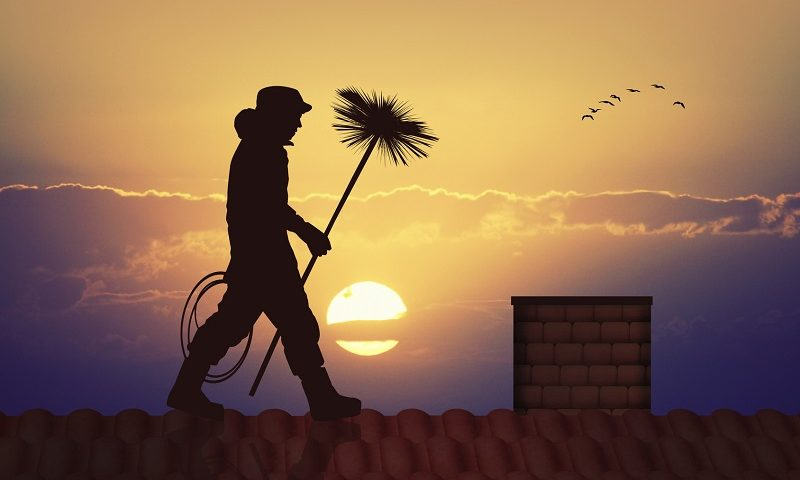

Po co ludziom dobry kominiarz?
Po co ludziom dobry kominiarz?
Okresowe czyszczenie przewodów kominowych, wentylacyjnych, dymowych i spalinowych to obowiązek wynikający z przepisów. O regularnym wzywaniu kominiarza należy pamiętać również – a może przede wszystkim – ze względu na własne bezpieczeństwo i zysk. Nawet, jeśli do ogrzania swych domów lub firm stosują Państwo nowoczesne kotły na gaz bądź olej opałowy, nie oznacza to, że czyszczenie kominów stało się mniej ważne. Należy być świadomym, że przewody spalinowe należy czyścić co najmniej dwa razy w roku, przewody wentylacyjne – raz w roku, a dymowe, odprowadzające spaliny na przykład z kominka, cztery razy w roku. Zlekceważenie tego może poskutować osadzeniem się na wewnętrznych ściankach komina dużej ilości sadzy, która ze względu na swój skład (praktycznie czysty węgiel) może się zapalić. Pożar w kominie powoduje wzrost temperatury do 800-1200°C. A jako, że żar w kominie dzieli od pomieszczeń jedynie ścianka z cegły, możemy wyobrazić sobie, jak duże jest wówczas niebezpieczeństwo pożaru. Pożar w kominie jest jedną z przyczyn pożarów budynków!
Tego typu ryzyko to tylko jedno z zagrożeń, które wiążą się z brakiem profilaktyki. Nie mniej groźne jest choćby uwolnienie się szkodliwych, a często zupełnie bezwonnych substancji z komina, które w skrajnych przypadkach mogą doprowadzić do śmierci.
Nasz zakład kominiarski, działając na terenie Górnego Śląska (szczególnie na terenie Tychów, Pszczyny, Katowic, Lędzin, Gliwic i Chorzowa) od 1999 roku profesjonalnie i kompleksowo dba o bezpieczeństwo i wygodę klientów indywidualnych, zakładów budżetowych, instytucji państwowych, spółdzielni i spółek oraz wspólnot mieszkaniowych.